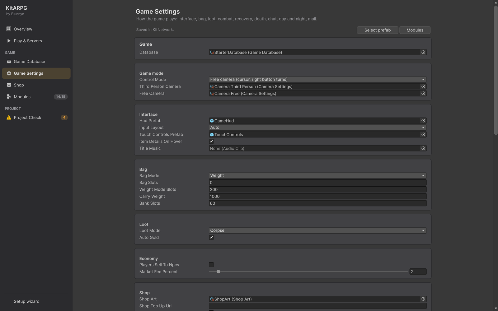

Game Settings
Game Settings holds the rules of your game that aren't tied to one item, monster or map: the control mode, the interface, the bag, loot, the economy, the in-game shop, server rates, combat, recovery, death, the chat filter, logs, day and night, mail and GM commands. This page lists every setting with its default.
Where it is
- KitARPG > Game Settings, or
- the Game Settings page in the KitARPG window (
Ctrl/Cmd+Shift+K).
Where the settings live
The settings are the fields of the Game Instance component (GameInstance) on the network prefab. In the starter sample that prefab is KitNetwork. Client and server builds both carry it, so they always agree.
The page finds the prefab by itself. The top line says "Saved in KitNetwork." (the prefab's name) with two buttons:
- Select prefab selects and pings the prefab in the Project window.
- Modules opens the Modules page. The module switches are part of the same component but are edited there.
Every change saves the prefab at once. There is no Apply button.
If no Game Instance is found, the page shows No GameInstance found ("It sits on the network prefab. Build the starter sample, or add one.") with Open the setup wizard.
Settings can't be changed in Play mode. The fields are greyed out and the page says "Stop Play to change the settings." Stop Play first.
A scene that has a Game Instance with overridden values doesn't see the changes you make here. Project Check reports it ("... overrides Game Settings on its Game Instance") and Fix scenes removes the overrides. See Project Check.
The settings

The page shows the fields in cards, one per group. The defaults below are the values a new Game Instance starts with; the starter sample fills in the prefab and asset fields (HUD, touch controls, cameras, shop art) for you.
Game
| Field | What it does | Default |
|---|---|---|
Database (database) |
The game database the game reads. See Game Database | None |
Game mode
| Field | What it does | Default |
|---|---|---|
Control Mode (controlMode) |
How the game is played: Top-down (click or keys), Diablo style; Free camera (cursor, right button turns); or Third person (crosshair aim), where the mouse turns. Server and clients must match: a map refuses a client of another mode. Modes your code registers show in the list too | Top-down |
Third Person Camera (thirdPersonCamera) |
Camera Settings asset of the third person mode. Edit it while playing to try it out; the changes stay | None |
Free Camera (freeCamera) |
Camera Settings asset of the free camera mode. Edit it while playing to try it out; the changes stay | None |
See Control modes.
Interface
| Field | What it does | Default |
|---|---|---|
Hud Prefab (hudPrefab) |
Canvas with the HUD and the game windows. Made once on clients and kept between maps. Empty: the scenes bring their own | None |
Input Layout (inputLayout) |
What the game is played with. Auto: touch on phones and tablets, mouse and keys elsewhere. Mouse And Keys. Touch: on-screen controls only, the game's keys are off. Touch And Keys: shows the touch controls and keeps the keyboard working, for tablets with a keyboard or to try them in the editor | Auto |
Touch Controls Prefab (touchControlsPrefab) |
Canvas with the on-screen controls, kept between maps like the HUD | None |
Item Details On Hover (itemDetailsOnHover) |
Pointing at an item shows its stats. Off: click the item to see them | Off |
Title Music (titleMusic) |
Loops on the title screen. Each map sets its own in the Game Database | None |
Font (font) |
The font of every text in the game, a TextMesh Pro font asset. Empty: TextMesh Pro's default | None |
Font
Under the settings, the Font card changes the font of the whole game:
- Drop a
.ttfor.otffrom the project in Font file and press Make font: the kit makes a TextMesh Pro font asset inAssets/Game/Fontsthat fills its letters as they are used, with TextMesh Pro's default as a fallback for letters it lacks, and sets it as the Font. A TextMesh Pro font asset you already have can go straight in Font. - Press Apply to the UI. Every text in the prefabs and scenes under
Assetsthat uses the previous font gets the new one, and new texts use it too. Texts you gave another font by hand keep theirs.
To go back, empty Font and apply again.
See HUD and windows and Touch controls.
Bag
| Field | What it does | Default |
|---|---|---|
Bag Mode (bagMode) |
Slots: a fixed number of slots. Weight: anything fits up to a weight that grows with the carry weight stat | Slots |
Bag Slots (bagSlots) |
Slots in a bag, in Slots mode | 40 |
Weight Mode Slots (weightModeSlots) |
Weight mode: different stacks a bag can hold, so it can't grow forever | 200 |
Carry Weight (carryWeight) |
Weight mode: what anyone can carry. Gear and attributes add their carry weight stat | 1000 |
Bank Slots (bankSlots) |
Slots in the bank, which every character of an account shares. It has no weight limit | 80 |
See Inventory and bank.
Loot
| Field | What it does | Default |
|---|---|---|
Loot Mode (lootMode) |
How players get what monsters drop. Ground: each item falls next to the monster. Corpse: items stay in the body and clicking it opens a loot window. Automatic: items go straight to the bag, and what doesn't fit falls on the ground. Only the player who earned the kill sees it | Ground |
Auto Gold (autoGold) |
Gold goes straight to the player. Off: it drops like the items, on the ground or in the body | On |
See Loot.
Economy
| Field | What it does | Default |
|---|---|---|
Players Sell To Npcs (playersSellToNpcs) |
Shops buy what players bring. Off: nothing is sold to NPCs; items go between players, to the market or to the forge, and loot never turns into gold. A shop can still refuse on its own | Off |
Market Fee Percent (marketFeePercent) |
Percent of the asking price paid to put a lot on the market, at least 1. It takes gold out of the game. 0 to 50 | 2 |
Shop
| Field | What it does | Default |
|---|---|---|
Shop Art (shopArt) |
Pictures for the in-game shop's cards and banner, found by the keys the offers name. The Shop page makes one when you first pick a picture | None |
Shop Top Up Url (shopTopUpUrl) |
Page where players buy premium currency, opened by the + next to their balance. Empty hides the button | Empty |
Shop Auto Take (shopAutoTake) |
Shop purchases and gifts go straight to the bag when they arrive. Off, or when the bag is full, they wait in the mail | On |
Rates
| Field | What it does | Default |
|---|---|---|
Experience Rate (experienceRate) |
Experience from kills and quests is multiplied by this on the whole server. 2 is double | 1 |
Loot Rate (lootRate) |
Every item's drop chance is multiplied by this. 2 drops twice as often, up to always | 1 |
Gold Rate (goldRate) |
Gold that monsters drop is multiplied by this | 1 |
None of them can go below 0. GMs can run temporary rate events on top of these with the /rates command. See GM commands.
Combat
| Field | What it does | Default |
|---|---|---|
Line Of Sight (lineOfSight) |
What stops attacks, skills and monsters from seeing through walls. Off: they go through anything. Nav Mesh: holes in the NavMesh block (walls, houses, trunks); needs no colliders. Colliders: colliders on the sight blocker layers block | Nav Mesh |
Sight Blockers (sightBlockers) |
Colliders mode: the layers that block sight. Characters never do | Default layer |
Heal Threat (healThreat) |
Share of a monster's anger that healing someone it fights earns, per point healed | 0.5 |
Threat Switch (threatSwitch) |
Another fighter takes a monster's attention once their threat passes the current target's by this factor. Values under 1 count as 1 | 1.1 |
Monsters Sleep Unseen (monstersSleepUnseen) |
Monsters no player can see stop thinking until one comes close. Saves server time on big maps | On |
See Combat.
Recovery
| Field | What it does | Default |
|---|---|---|
Combat Seconds (combatSeconds) |
Seconds a player stays in combat after the last hit they took or dealt, missed and blocked hits too | 6 |
Regen In Combat (regenInCombat) |
Health and mana regeneration keeps going in combat. Off: it waits until the fight is over | On |
Out Of Combat Regen (outOfCombatRegen) |
Regeneration out of combat is multiplied by this. 3 recovers three times as fast between fights | 1 |
Level Up Restores Health (levelUpRestoresHealth) |
Reaching a new level fills health | On |
Level Up Restores Mana (levelUpRestoresMana) |
Reaching a new level fills mana | On |
Death
| Field | What it does | Default |
|---|---|---|
Death Experience Loss (deathExperienceLoss) |
Percent of the experience the current level needs that a player loses on coming back at the spawn point. Never takes a level away, and an ally's revive saves it. 0 to 100 | 5 |
Pvp Death Costs Experience (pvpDeathCostsExperience) |
Players killed by other players lose it too. Duels never cost anything | Off |
Respawn Health (respawnHealth) |
Percent of health a player comes back with at the spawn point. 1 to 100 | 100 |
Respawn Mana (respawnMana) |
Percent of mana a player comes back with at the spawn point. 0 to 100 | 100 |
See Recovery and death.
Chat filter
| Field | What it does | Default |
|---|---|---|
Blocked Words (blockedWords) |
Words nobody may say, one per entry. End one with * to also catch what starts with it |
Empty |
Blocked Words File (blockedWordsFile) |
More blocked words, one per line, for long lists. A text asset | None |
Chat Filter Mode (chatFilterMode) |
Mask hides blocked words with asterisks; Block drops the whole line | Mask |
See Chat.
Logs
| Field | What it does | Default |
|---|---|---|
Log Loot From (logLootFrom) |
Loot of this rarity or better goes to the game log: Common, Magic, Rare, Epic or Legendary | Rare |
Log Chat (logChat) |
Every chat line goes to the game log too. Reports always carry the lines around them | Off |
See Game log and reports.
Day and night
| Field | What it does | Default |
|---|---|---|
Day Minutes (dayMinutes) |
Real minutes a whole game day lasts. 0 stops the clock at the fixed hour | 48 |
Day Start Hour (dayStartHour) |
Hour the clock starts at, for shifting days against real time. 0 to 24 | 8 |
Fixed Hour (fixedHour) |
Hour the clock shows when it doesn't run. 0 to 24 | 12 |
Night From (nightFrom) |
Night starts at this hour | 20 |
Night To (nightTo) |
Night ends at this hour | 6 |
With the Day and night module off, it is always the fixed hour. See Day and night.
| Field | What it does | Default |
|---|---|---|
Mail Anywhere (mailAnywhere) |
Read and send mail from anywhere. Off: only at an NPC with a mailbox option | On |
Mail Postage (mailPostage) |
Gold to send a letter | 10 |
Mail Postage Per Item (mailPostagePerItem) |
More gold for each item attached | 5 |
Mail Items (mailItems) |
Items one letter can carry. Central's MaxMailItems setting should match |
5 |
See Mail.
Commands
| Field | What it does | Default |
|---|---|---|
Single Player Commands (singlePlayerCommands) |
In a single player world the player can use every GM command, like cheats. Online, the account's role decides | On |
Gm Command Levels (gmCommandLevels) |
The GM level each command asks for, when it isn't its default. Each entry has Command (the name without the slash, like item) and Level: 1 player, 2 moderator, 3 game master, 4 admin. Changing a role (/role) always needs 4 |
Empty |
See GM tools.
Step by step: change a setting
- Stop Play mode if it is running.
- Open KitARPG > Game Settings.
- Find the card and change the field. The prefab saves by itself.
- Single player: press Play; the change is in.
- MMO: rebuild the map server and restart the services from Play & Servers, because map servers run from their build. Clients you hand out need a new build too.
Single player and MMO
- In single player the game reads these settings directly from the prefab in the build.
- In MMO, the map servers apply the game rules (loot, rates, combat, recovery, death, mail costs) and the clients use the interface settings. Both read the same prefab from their builds, so rebuild both after changing settings. The control mode must match on both sides.
- A few values have a matching setting in the services, such as Mail Items and Central's
MaxMailItems. See Configuration.
Tips
- Try rates and recovery values in single player first; it starts in seconds.
- Use Gm Command Levels to let moderators use a command that is admin only by default, without changing code.
- For a hardcore server, set Death Experience Loss high and turn on Pvp Death Costs Experience.
Common mistakes
- Editing the Game Instance in a scene instead of the prefab. The scene keeps an override and Game Settings no longer reaches it. Project Check finds it.
- Changing settings and testing an old map server build. The server still has the old values. Rebuild it.
- A control mode that differs between client and server builds. The map refuses the client with a mode mismatch.